---
{
  "layout": "note",
  "title": "Ch6 Boundary layer theory part2 - Blasius solution",
  "journal": true,
  "section": "Study",
  "topic": "Viscous Flow",
  "excerpt": "이전 포스터 부터, 우리는 boundary layer에 대해서 수학적으로 분석하고 있다. boundary layer thickness가 굉장히 얇다는 가정 -> Order of Magniutde를 활용하여 다음의 Boundary la",
  "classes": "wide",
  "permalink": "/blog/mechanical-engineering/viscous-flow/ch6-boundary-layer-theory-part2-blasius-solution/",
  "study_area": "Mechanical",
  "date": "2024-12-12",
  "source_url": "https://jeffdissel.tistory.com/148",
  "header": {
    "teaser": "/blog/mechanical-engineering/viscous-flow/ch6-boundary-layer-theory-part2-blasius-solution/images/img-001.png"
  }
}
---
{% raw %}<p>이전 포스터 부터,<br />
우리는 boundary layer에 대해서 수학적으로 분석하고 있다.<br />
boundary layer thickness가 굉장히 얇다는 가정<br />
-&gt; Order of Magniutde를 활용하여<br />
다음의 Boundary layer Equation을 이전 포스터에서 증명하였다.<br />
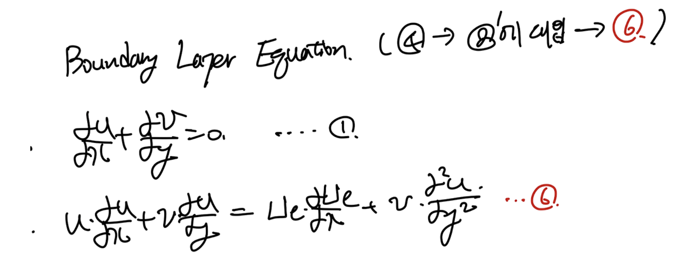<br />
Boundary layer Equation w/ too small boundary layer thickness.<br />
이번 시간에는, Flat plate geometry에서<br />
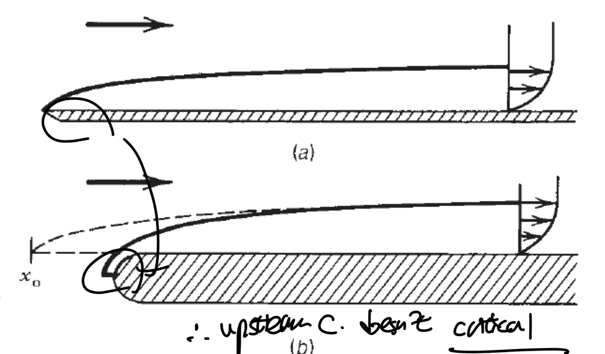<br />
유체가 x방향으로<br />
constant<br />
하게 흐르는 경우를 살펴보자.<br />
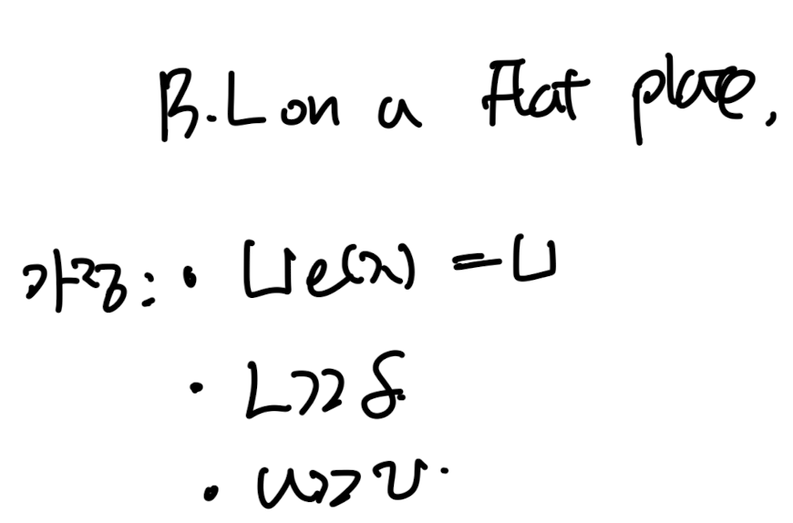<br />
이때, boundary layer equation에서<br />
dU/dx = 0 으로 소거가 된다.<br />
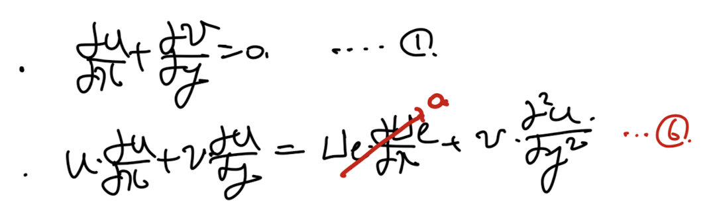<br />
그리고 Boundary condition은 다음과 같다.<br />
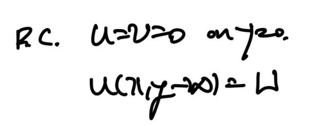<br />
여기서 Ch4 에서 사용하였던,<br />
Similarity Solution개념을 사용하자.</p>
<hr />
<h1>similiarity solution이란?</h1>
<p>No length time scale 인 상황에서,<br />
가지고 있는 independent variable를 조합<br />
-&gt; 새로운 dimensionless variable 만들고,<br />
가지고 있는 방정식의<br />
variable 수를 줄이는 방식.<br />
(쉽게 말해, 우리가 풀고자하는 공학문제의<br />
변수의 갯수를 무차원화 시켜 축소시키는 것이다.)</p>
<hr />
<p>결국, u는<br />
u = g(U, y, x)에 관한 함수인데,<br />
여기서 우리가 관심있는,<br />
x -&gt;<br />
δ(x)<br />
로 바꿔준후,<br />
dimensionless 작업을 해주어,<br />
η(에타, 새롭게 정의한무차원수)에<br />
관한 함수로 나타내자.<br />
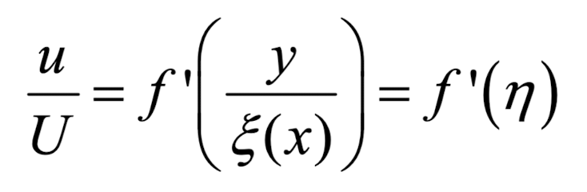<br />
ξ(x) = δ(x) , boundary layer thickness.<br />
이후, u를 y로 적분 해주어,<br />
( u = dψ/dy , ψ(x=0) = 0 )<br />
stream function (ψ)<br />
을 나타내면,<br />
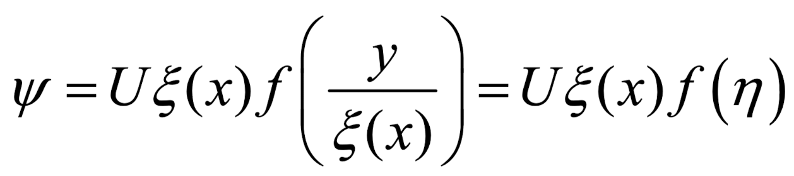<br />
ξ(x) = δ(x) , boundary layer thickness.<br />
이후는, 사실상 저 similarity solution을 아까 정리한,<br />
flat plate boundary layer Eq에 대입하는<br />
'수식파티' 이다.<br />
<br />
Boundary layer Eq.</p>
<hr />
<p>수식파티 하기전에, <br />
이번 블로그에서 가장 핵심적인 질문은<br />
어떻게 Blasius 라는 사람은 저렇게 치환을 할 생각을 했을까?<br />
그리고 저 치환이 의미가 있는 이유가 뭘까?<br />
이다.<br />
밑은 위 질문의 답을 내고자,<br />
similairty solution에서 무차원수를 치환하는 방법을 교재에서 찾은 내용이다.<br />
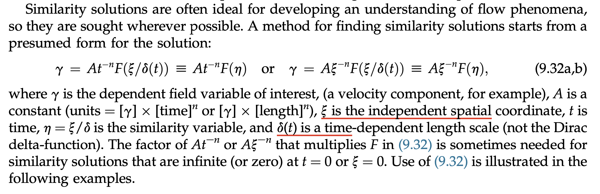<br />
완벽하게 이해하지는 못했지만,<br />
정리한 바로는<br />
시간과 공간은 각각 independent variable,<br />
공간에서도 각 기저 x,y,는 independent variable이다.<br />
각각은 독립적이지만,<br />
x를 통해 -&gt; y방향으로의 길이 즉<br />
δ(x)를 정의하고,<br />
y/<br />
δ(x) 로 나누어 주어(같은 기저의 길이변수이므로)<br />
무차원화 시킬 수 있다.<br />
하지만 이러한 작업은<br />
특정 length scale이 존재하지 않을때만,<br />
가능하다.<br />
이유는 단순하다,<br />
굳이 x를 사용해서 y를 무차원화 시키지 않고,<br />
이미 가지고 있는 length scale로 무차원화 시키므로,<br />
indendent variable 수가 감소하지 않는다.<br />
예를들어, 두개의 flat plat 사이를 유체가 흐르는 경우,<br />
두 flat plate사이의 거리 라는 특정한 length(d) 가 있을 것이다.<br />
이때, y/d 이런식으로<br />
혹은 unsteady인 상황에서라면,<br />
y/Ut 이런식으로 무차원화 시킬 수 있다.</p>
<hr />
<p>이제 수식파티를 진행하자.<br />
본업으로 복귀.<br />
6번식에 대입하기전에, u,v 그리고 미분항들을<br />
미리 작성해놓자.<br />
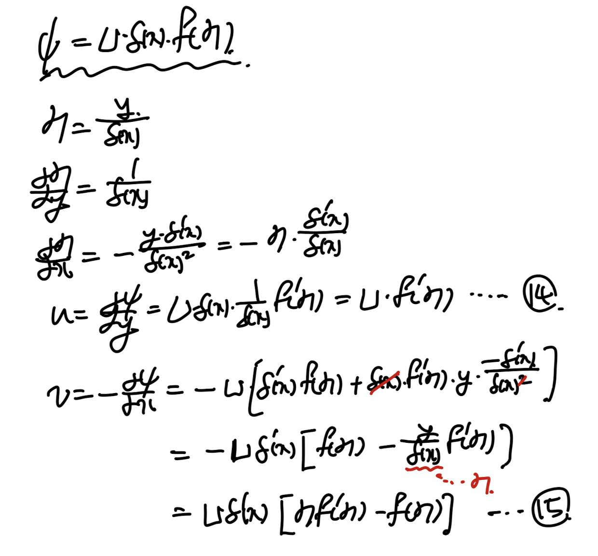<br />
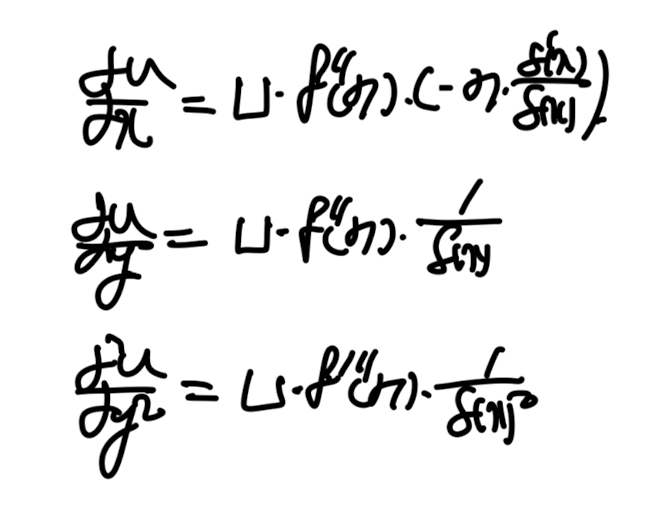<br />
<br />
u,v 유도<br />
<br />
u 미분 term.<br />
이제 6번식에 대입해주자.<br />
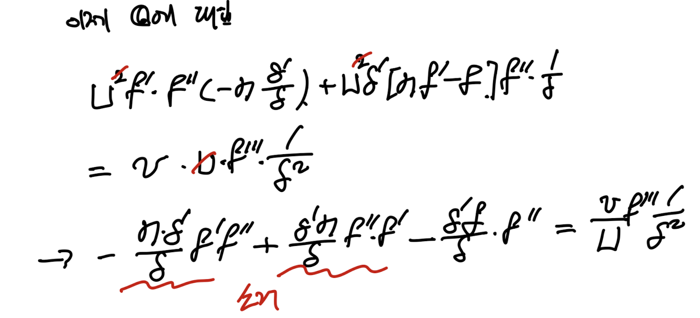<br />
이후, 정리한 후 여기서 무차원 방정식의 계수는 비례해야한다.<br />
(단위 맞추기 위해)<br />
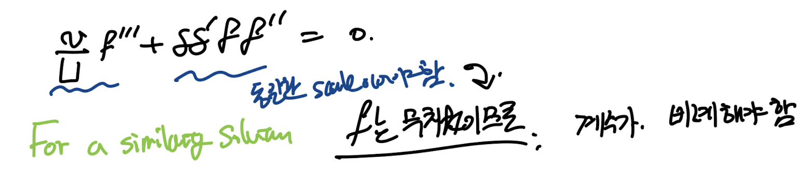<br />
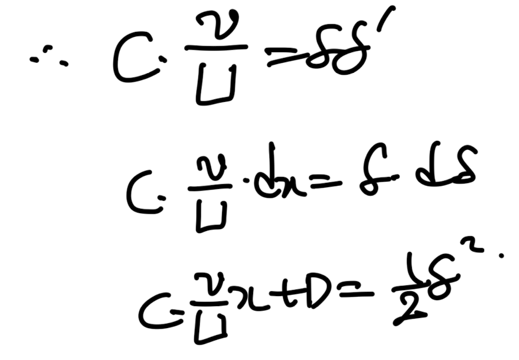<br />
<br />
<br />
BC을 적용시키고, C는 사실상 위 식을 만족하기만 하면 되기 때문에.<br />
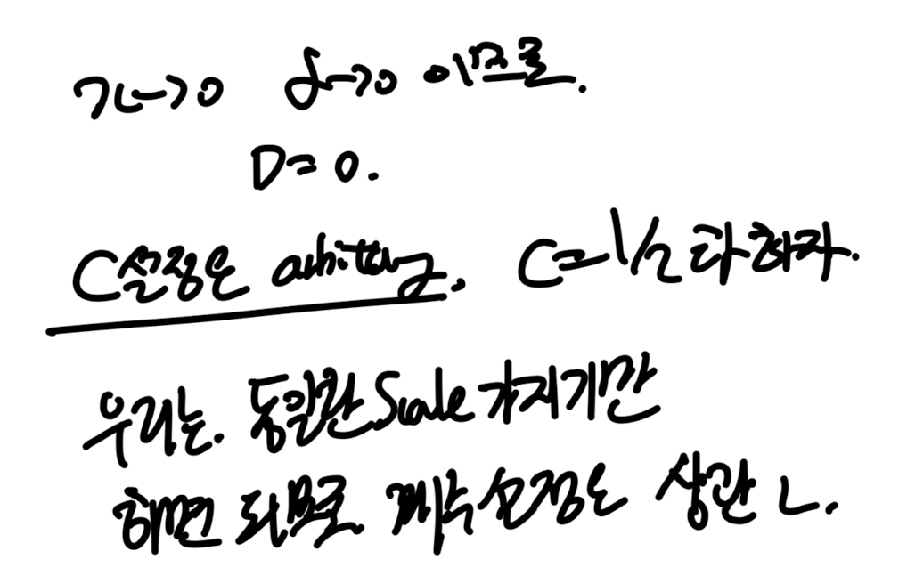<br />
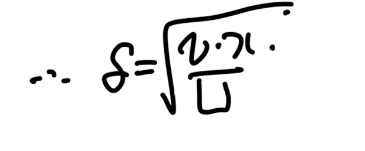<br />
<br />
<br />
이를 Similairty variable에 대입해주자.<br />
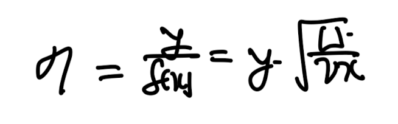<br />
그리고 아까 까지 유도하였던, f에 관한 ODE에 대입.<br />
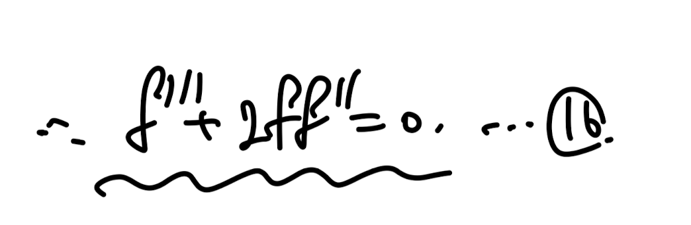<br />
이제 3차 non linear ODE를 computational method로 풀게되면,<br />
최종적으로, 밑의<br />
η와 u/U의 그래프가 도출된다.<br />
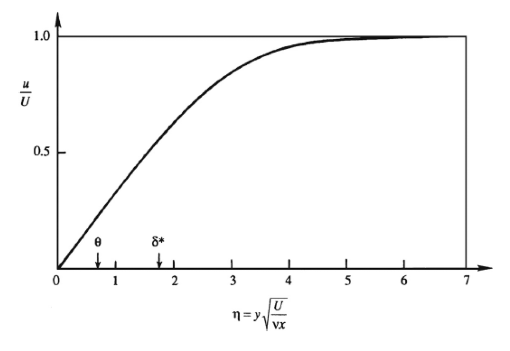<br />
여기서 우리가 알고 싶은 것은,<br />
boundary layer thickness(delta)이다.<br />
boundary layer thickness의 정의에 따라,<br />
u = U 가 되는 순간에서의 높이 y값이<br />
바로 boundary layer thickness이지만,<br />
위 그래프 solution을 보면 y 가 무한일때 성립하므로,<br />
u = 0.99U일때 y = 4.92(from graph)를<br />
boundary layer thickness라고 정의하자.<br />
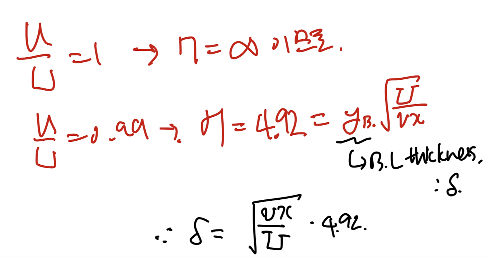<br />
드디어, boundary layer thickness - x와의 관계식을<br />
구했고, 이를 Blasisus solution이라고 한다.<br />
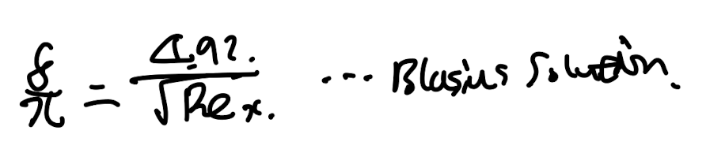<br />
이전 포스터에서<br />
displacement thickness, momentum thickness 식에 대해서 배웠었고,<br />
우리는 blasius solution을 가지고 각각 유도할 수 있다.<br />
뿐만아니라<br />
Momentum thickness -&gt; Shear stress ( Integral relation)<br />
shear stress -&gt; Skin friction coefficient(Cf)<br />
Skin friction coefficeint(Cf) -&gt; Drag coefficient (Cd)<br />
Cd -&gt; D(Drag force)<br />
까지 유도할 수 있다.<br />
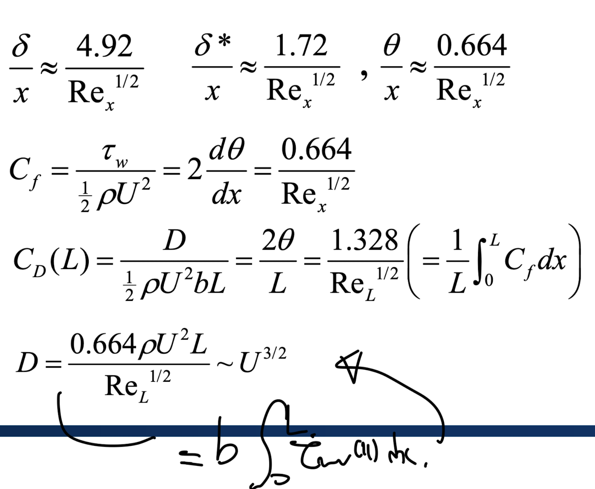</p>{% endraw %}
